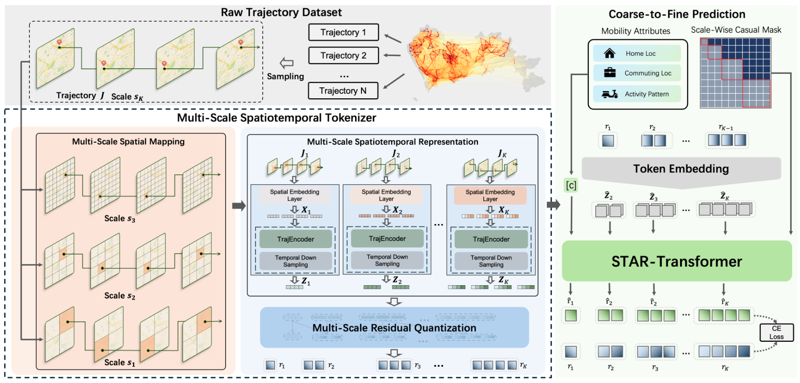

Human Mobility
M-STAR
M-STAR models human mobility through multi-scale spatiotemporal dependencies, supporting the characterization of intra-urban activity patterns and the generation of mobility scenarios.
GitHub Repository